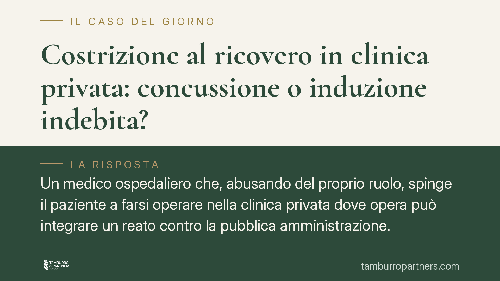

Costrizione al ricovero in clinica privata: concussione o induzione indebita?
Un medico ospedaliero che, abusando del proprio ruolo, spinge il paziente a farsi operare nella clinica privata dove opera può integrare un reato contro la pubblica amministrazione. La qualificazione dipende da un dettaglio decisivo: se vi è stata costrizione o mera induzione. Dopo la riforma del 2012 i due profili configurano reati distinti, con conseguenze rilevanti per medico e paziente.

Il caso e la nota preliminare sulla fonte
La questione riguarda il medico dipendente del Servizio Sanitario Nazionale che, sfruttando lentezze e disservizi organizzativi della struttura pubblica, orienta il paziente verso la clinica privata in cui esercita a titolo personale. La condotta viene analizzata sotto il profilo dei reati contro la pubblica amministrazione.
> Nota di trasparenza: la sentenza citata dalla fonte divulgativa (n. 20345/2026) reca una data non ancora maturata e non risulta ad oggi verificabile presso i repertori ufficiali. Trattiamo quindi il tema in chiave di principi consolidati, senza attribuire affermazioni a una pronuncia non riscontrabile. Il quadro di diritto resta valido a prescindere dal singolo precedente.
Inquadramento normativo: costrizione o induzione?
Qui si gioca tutto. Dopo la Legge 6 novembre 2012, n. 190 (cosiddetta "legge anticorruzione"), l'art. 317 c.p. (concussione) punisce esclusivamente la costrizione: il pubblico ufficiale che, abusando della sua qualità o dei suoi poteri, costringe taluno a dare o promettere denaro o altra utilità.
La induzione — cioè la persuasione, la pressione psicologica più sfumata, lo sfruttamento di uno stato di soggezione senza vera coazione — è stata invece scorporata e trasferita nel reato autonomo di induzione indebita a dare o promettere utilità, previsto dall'art. 319-quater c.p.
La differenza non è nominalistica. Nella concussione (art. 317 c.p.) il privato è vittima e non è punibile. Nell'induzione indebita (art. 319-quater c.p.) anche l'indotto è punibile, seppure con pena minore, perché ha comunque tratto o cercato un vantaggio dalla dazione.
Sul piano sanzionatorio, l'art. 317 c.p. prevede la reclusione nella cornice risultante dalle riforme del 2012 e del 2015 (L. 27 maggio 2015, n. 69), con minimo edittale elevato rispetto al testo originario. Consigliamo di verificare la cornice esatta sulla versione vigente della norma, poiché è stata più volte ritoccata.
Quando la spinta verso il privato diventa concussione
Perché scatti la concussione ex art. 317 c.p. serve una vera costrizione: il paziente deve percepire di non avere alternativa reale, perché il medico prospetta o lascia intendere un pregiudizio concreto — ad esempio l'esclusione di fatto dal percorso di cura pubblico, l'aggravamento della patologia per attese artificiosamente allungate, la sottrazione di priorità che gli spetterebbero.
Se invece il medico si limita a suggerire, a enfatizzare i disservizi altrui, a orientare la scelta senza coartare la volontà, la condotta scivola verso l'induzione indebita dell'art. 319-quater c.p. Il discrimine è l'intensità della pressione e il residuo margine di libertà del paziente.
È un accertamento di fatto, rimesso al giudice caso per caso. Per questo la qualifica corretta non può essere data a priori: dipende dalle prove sulla dinamica concreta del rapporto.
Perché non truffa né corruzione
Non si tratta di truffa (art. 640 c.p.): lì il reato ruota attorno ad artifizi e raggiri che inducono in errore per procurarsi un ingiusto profitto, in un rapporto tra privati o comunque privo dell'abuso della qualità pubblica.
Non è nemmeno corruzione: la corruzione presuppone un accordo, un patto illecito tra il pubblico agente e il privato che pagano insieme una condotta contraria ai doveri d'ufficio. Nella concussione e nell'induzione indebita, invece, il rapporto è squilibrato: uno impone o preme, l'altro subisce.
Implicazioni pratiche per il paziente
Nella concussione il paziente è persona offesa. Ha diritto a essere informato degli atti, a partecipare al procedimento e a costituirsi parte civile per ottenere il risarcimento del danno patrimoniale (le somme versate alla clinica) e non patrimoniale.
Attenzione però: se il fatto viene riqualificato come induzione indebita ex art. 319-quater c.p., la posizione del paziente può mutare, perché l'indotto è a sua volta punibile. Da qui l'importanza di una valutazione tecnica sin dalle prime fasi.
Cosa fare in concreto
- Documentate tutto: conservate referti, prescrizioni, messaggi, appuntamenti disdetti o rinviati e ogni traccia delle pressioni ricevute.
- Ricostruite la cronologia delle attese nel pubblico e confrontatela con i tempi offerti nel privato: il divario artificioso è un indizio rilevante.
- Non firmate né pagate sotto pressione senza aver prima verificato le reali alternative presso la struttura pubblica.
- Rivolgetevi a un legale prima di sporgere denuncia, per valutare se la condotta configuri costrizione (art. 317 c.p.) o induzione (art. 319-quater c.p.): la differenza incide sulla vostra stessa posizione.
- Valutate la costituzione di parte civile per il recupero delle somme versate e il risarcimento dei danni.
Disclaimer
Contributo informativo a cura di Tamburro & Partners - Avv. Giuseppe Tamburro. Non costituisce parere legale.
Ogni condominio ha una storia a sé.
Se gestisci un'amministrazione e vuoi un confronto su una specifica questione condominiale, scrivi allo studio. Ti rispondiamo entro un giorno lavorativo.